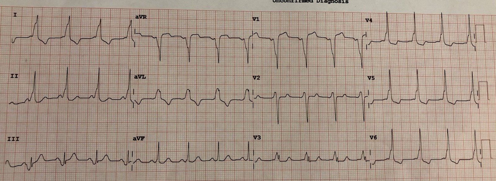
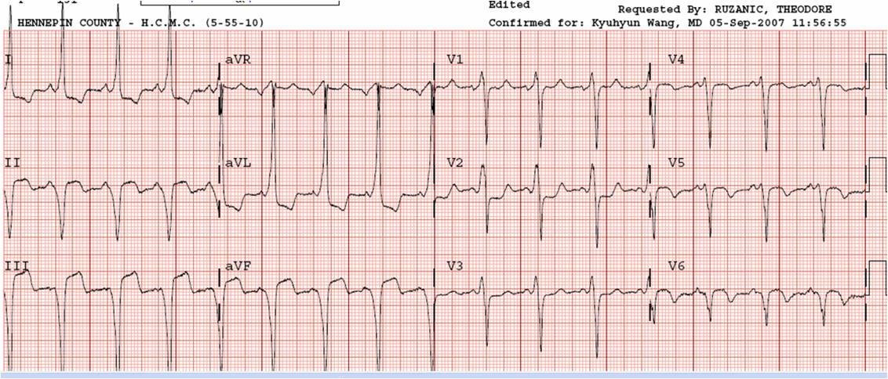
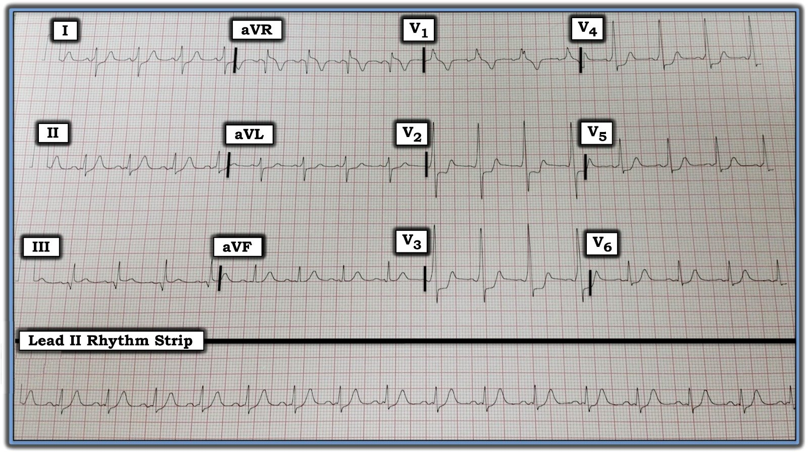
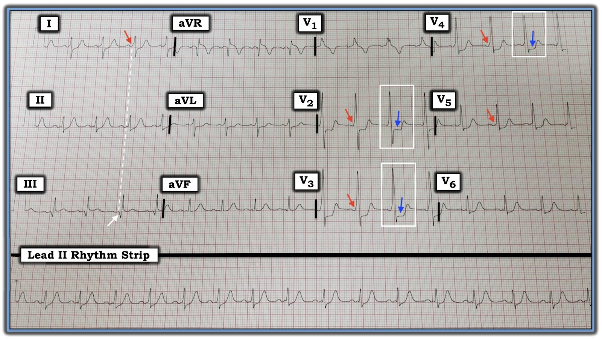

05/04/2022 — ST chênh xuống lan tỏa, kèm ST chênh lên ở aVR. Bạn có thấy chẩn đoán không?
Bản dịch tiếng Việt của bài "Diffuse ST Depression, with ST Elevation in aVR. Do you see the diagnosis?" – Dr. Smith’s ECG Blog. Giữ nguyên toàn bộ 5 hình ảnh của bản gốc.
Ca này được nhắn tin cho tôi từ cách xa 2000 dặm. Bản ghi của một người nam 30 mấy tuổi bị đau ngực.
Người ta lo ngại có thiếu máu cục bộ.


Bạn nghĩ gì?
Có bằng chứng nào của thiếu máu cục bộ không?
Không. Không có. Mọi bất thường ST-T đều là thứ phát do QRS bất thường được tạo ra bởi tiền kích thích. Đây là WPW.
Hãy chú ý khoảng PR rất ngắn. Hãy chú ý các sóng delta rõ ràng.
Phần lớn, nhưng không phải toàn bộ, ST chênh lên và ST chênh xuống là ngược hướng (discordant) với QRS bất thường, và không ngược hướng quá mức.
Ngược lại, ở điện tâm đồ dưới đây, ST chênh lên và ST chênh xuống ngược hướng là không tương xứng với QRS (vốn bất thường do WPW, có sóng delta):


Đây là một ca WPW trong đó STE (thành dưới) và STD (aVL) không tương xứng. Đây là một ca WPW có OMI cấp thành dưới-sau chồng lên.
Xem thêm một số ca WPW khác tại đây:
WPW mimicking and obscuring acute MI (WPW giả dạng và che lấp nhồi máu cơ tim cấp)

===================================
BÌNH LUẬN CỦA TÔI, bởi KEN GRAUER, MD (5/4/2022):
===================================
Ca hôm nay là một ví dụ tuyệt vời cho thấy vì sao WPW thường được gọi là “kẻ bắt chước vĩ đại (great mimic) trên điện tâm đồ”. Đó là vì có rất nhiều bệnh cảnh mà bất thường điện tâm đồ này có thể giống, bao gồm:
- LVH (với hình ảnh giống “tăng gánh” ở các chuyển đạo bên).
- RVH (với sóng R chiếm ưu thế ở chuyển đạo V1 do đường phụ bên trái).
- RBBB hoặc LBBB (do QRS giãn rộng cộng với hình dạng rất giống các rối loạn dẫn truyền này).
- Thiếu máu cục bộ cơ tim và/hoặc nhồi máu (sóng delta âm có thể giống sóng Q — và các bất thường ST-T đi kèm WPW có thể rất giống bất thường của thiếu máu cục bộ hay nhồi máu).
Do sự giống nhau đến thế với các bệnh cảnh điện tâm đồ khác — trong phần lớn trường hợp (theo kinh nghiệm của tôi) — một khi đã nhận ra tiền kích thích do WPW, rất khó (nếu không nói là không thể) nói thêm được nhiều điều về bản ghi. Bản ghi thứ 2 mà Dr. Smith đưa ra ở trên minh họa một ngoại lệ đáng chú ý đối với nhận định chung này — trong đó mặc dù có WPW, vẫn có một nhồi máu cơ tim cấp dưới-sau chồng lên và có thể chẩn đoán được trên điện tâm đồ! Bài học mà ví dụ này của Dr. Smith truyền tải rất rõ ràng:
- Đôi khi bạn có thể chẩn đoán tắc mạch vành cấp bằng điện tâm đồ ở bệnh nhân có WPW nền!
Trong khi ghi nhớ bài học quan trọng này do Dr. Smith truyền tải — tôi muốn nêu ra hệ quả ngược lại của tình huống này — cụ thể là — đôi khi với WPW, dù điện tâm đồ “trông giống” tắc mạch vành cấp — các bất thường ST-T bạn thấy có thể chỉ đơn giản là hậu quả của WPW.
- Điều cốt lõi: Đôi khi ở bệnh nhân WPW đến khám vì đau ngực — bạn đơn giản là sẽ không thể biết được từ điện tâm đồ liệu có (hay không có) tắc mạch vành cấp.
Điện tâm đồ ở Hình 1 là của một người nam 35 tuổi đến khám vì đau ngực mới khởi phát. BẠN nghĩ gì?


Suy nghĩ của tôi về bản ghi này:
Nhịp ở Hình 1 là nhịp xoang tần số ~90/phút. Mặc dù thoạt nhìn (tức là khi nhìn chuyển đạo II) — khoảng PR có vẻ bình thường — nhưng QRS rộng, có sóng delta ở một số chuyển đạo và khoảng PR ngắn ở những chuyển đạo có sóng delta đó (Xem các mũi tên ĐỎ ở Hình 2). Bệnh nhân này có WPW.
- ĐIỂM THEN CHỐT (PEARL) #1: Sóng delta không phải lúc nào cũng thấy được ở cả 12 chuyển đạo của điện tâm đồ khi bệnh nhân có WPW. Vì vậy, đôi khi việc chẩn đoán có thể khá khó khăn. Vấn đề càng phức tạp hơn do thực tế là một số bệnh nhân (hay gặp hơn ở người lớn tuổi) bình thường đã có sự chậm lại phần nào ở đoạn đầu (và do đó có trát đậm) của phức bộ QRS. Vì vậy: Khi cân nhắc khả năng WPW — cần xem xét kỹ lưỡng cả 12 chuyển đạo. Nếu trát đậm ban đầu còn nghi ngờ chỉ rất ít và chỉ thấy ở 1 hoặc 2 chuyển đạo — thì nhiều khả năng bệnh nhân không có WPW. Nhưng nếu chắc chắn thấy các sóng delta không thể nhầm lẫn đi kèm khoảng PR ngắn (như được đánh dấu bằng các mũi tên ĐỎ ở các chuyển đạo V2, V3 và V4 của Hình 2) — thì bạn đã chẩn đoán được dù không thấy sóng delta rõ ràng ở một số chuyển đạo khác.
- ĐIỂM THEN CHỐT (PEARL) #2: Một khi đã xác định bệnh nhân có WPW — bạn thường có thể QUAY LẠI và nhận ra những sóng lệch tinh tế mà khi nhìn lại thì cũng là sóng delta. Ví dụ, ở Hình 2 — ban đầu tôi nghĩ có sóng Q ở chuyển đạo III (mũi tên TRẮNG). Tuy nhiên, việc sóng lệch âm này ở chuyển đạo III xảy ra đúng cùng một thời điểm với sóng delta ở chuyển đạo I ghi đồng thời (đường chấm TRẮNG, dẫn lên mũi tên ĐỎ ở chuyển đạo I) — cho chúng ta biết rằng sóng lệch âm này ở chuyển đạo III thực ra là một sóng delta âm.
- Các ví dụ khác về “nhận ra khi nhìn lại” sóng delta ở Hình 2 được thấy ở các chuyển đạo II, aVL và aVF. Như vậy, gợi ý về một “gờ nhỏ thêm vào” rất nhỏ trên đường nền ở các chuyển đạo II và aVF nhiều khả năng là các sóng delta tinh tế gần như hoàn toàn đẳng điện.


=============================
Như đã nêu — bệnh nhân có điện tâm đồ ở Hình 2 là một người nam 35 tuổi đến khám vì đau ngực mới khởi phát.
- Còn ST chênh xuống “dạng bậc thềm” (shelf-like) thấy trong các hình chữ nhật TRẮNG thì sao? ST chênh xuống trông đáng lo ngại này tối đa ở các chuyển đạo V2 đến V4 — mà ở một bệnh nhân mới bị đau ngực, chúng ta đã được dạy phải theo phản xạ nghĩ tới OMI cấp thành sau.
Diễn tiến của CA BỆNH này:
Bác sĩ tim mạch phụ trách ca này cũng không chắc chắn như tôi khi nhìn ST chênh xuống này (trong các hình chữ nhật TRẮNG) — về việc nó phản ánh tắc mạch vành cấp — hay chỉ đơn giản là biểu hiện đi kèm WPW của bệnh nhân.
- Bệnh nhân được thông tim. Kết quả cho thấy các động mạch vành không có bệnh lý đáng kể.
BÀI HỌC: Phần nhiều (nếu không nói là phần lớn) thời gian — bạn sẽ không thể nhận ra thiếu máu cục bộ hay nhồi máu cấp trên điện tâm đồ của bệnh nhân có WPW. Dù vậy, đôi khi — thay đổi ST-T có thể đủ nổi bật để gợi ý bệnh lý cấp tính. Trong những trường hợp đó — có thể cần thông tim để xác định giải phẫu. Đó là tình huống trong ca tôi đã trình bày.